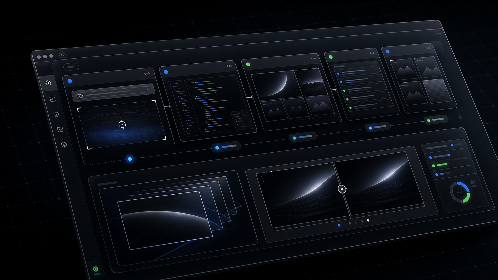
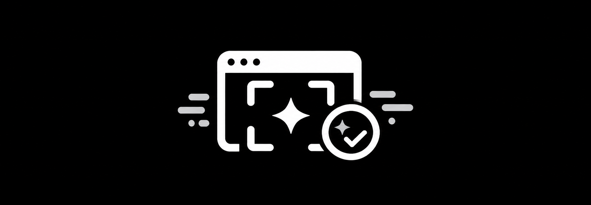

为 Codex skill 项目复刻 landing 页

无论目标页面多复杂，先把 DOM、CSS、字体、图片和首屏状态冻结成可信基线，再进入改写。
从 capture 到 copy-map、image-plan、QA 截图，所有中间产物都留在项目目录，方便复查和复用。
保存渲染后的页面结构、样式资源、字体、图片地址和关键视觉 token。
桌面与移动截图对比，先修复可见差异，再允许进入 remix。
把源站 headline、CTA、卡片、页脚文案映射到当前项目语境。
由 content-inventory.json 记录文本、图片、位置和替换计划。
先列出要替换的图片槽位，再调用 imagegen 或复用本地项目素材。
产出可直接预览的 landing-pages/<slug>/index.html。
检查无 broken image、无横向溢出、无控制台错误。
保留从 clone 中提取设计系统的分支能力。
下载 CSS、字体和必要媒体，减少跨域依赖。
只替换内容和素材，不改变原始布局节奏。
保留原站截图、本地 clone 截图和最终截图。
遇到懒加载、遮挡层、CSS 级联、移动端换行时，先做定向修复，避免重设计。
对客户端渲染页面先等真实浏览器完成加载，再滚动触发图片和动效，捕获可信状态。
登录态或多页面项目可以按状态分别保存 clone.html、homepage.png 和 live.json。
移除源站品牌、第三方 logo 和不受支持的效果承诺，保留布局而不是保留商标。
最终在桌面和移动端检查 CTA、卡片、页脚等长文案是否破坏原版节奏。
对客户端渲染页面先等真实浏览器完成加载，再滚动触发图片和动效，捕获可信状态。
登录态或多页面项目可以按状态分别保存 clone.html、homepage.png 和 live.json。
移除源站品牌、第三方 logo 和不受支持的效果承诺，保留布局而不是保留商标。
最终在桌面和移动端检查 CTA、卡片、页脚等长文案是否破坏原版节奏。
复刻外部 landing 页的结构，再把内容替换为当前文件夹中项目的能力与语气。
源站品牌素材已替换为 clone-design 的安全视觉资产，保留原卡片和轮播密度。
项目文案来自 README.en.md、SKILL.md 和 workflow 文档，避免虚构业务指标。
项目相关素材由 imagegen 生成并保存到 assets/generated，避免继续使用源站视觉资产。
QA 目录保存 original、clone、final 三组截图，证明每一步的视觉状态。
imagegen 生成的项目素材会进入 assets/generated，并在最终 QA 中确认尺寸、裁切和加载状态。
最终页面保留 source-clone.html 作为可追溯基线，方便比较和继续迭代。
源站品牌素材已替换为 clone-design 的安全视觉资产，保留原卡片和轮播密度。
项目文案来自 README.en.md、SKILL.md 和 workflow 文档，避免虚构业务指标。
项目相关素材由 imagegen 生成并保存到 assets/generated，避免继续使用源站视觉资产。
QA 目录保存 original、clone、final 三组截图，证明每一步的视觉状态。
imagegen 生成的项目素材会进入 assets/generated，并在最终 QA 中确认尺寸、裁切和加载状态。
最终页面保留 source-clone.html 作为可追溯基线，方便比较和继续迭代。
复刻外部 landing 页的结构，再把内容替换为当前文件夹中项目的能力与语气。
适合个人开发者与小团队
适合多页面和复杂状态复刻